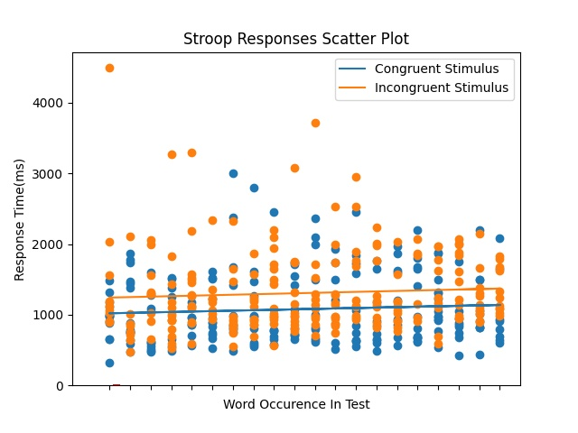
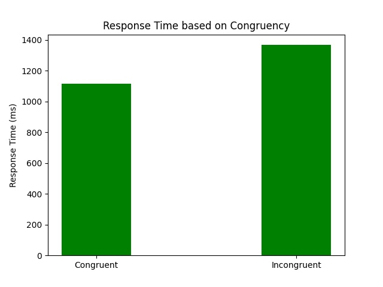
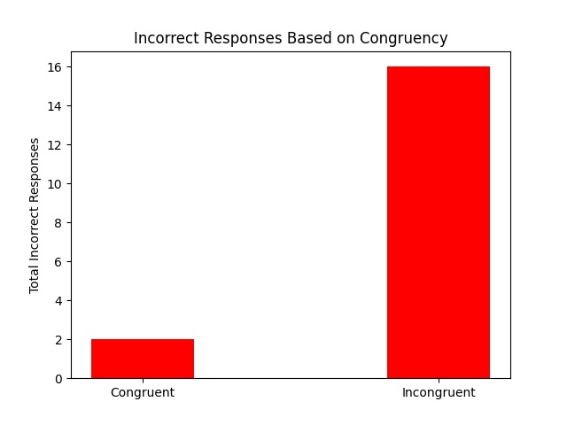

363 Final Report: Stroop test
Table of Contents
1 Introduction
John Ridley Stroop published the groundbreaking, "Studies of interference in serial verbal reactions" in the Journal of Experimental Psychology in 1935 \cite{Stroop1935}. Ever since, psychology students worldwide learn about the "Stroop effect", where incongruent stimuli take longer to process than do congruent stimuli. Even though Stroop wasn't the first to publish this effect, his experiments were foundational; his original study is one of the most-cited papers in the history of experimental psychology \cite{MacLeod1991Stroop}.
2 Methods
There have been many variations on Stroop's experiment over the years. Since key presses are easier to time than a person reading aloud, we chose to go with a "manual" Stroop task where reaction time is measured by how long it takes a participant to press a certain key on a keyboard after being shown the stimuli on the computer screen. We used the psychopy library in python to program the experiment \cite{Peirce2019Psychopy} and followed the example shown in the demo Stroop task at psytoolkit.org \cite{PsytoolkitStroopDemo}.
Python was the only tool we used in our project, we used it to code our experiment and as our computational tool. The python experiment that we coded is in the same folder as this and it is called StroopTest.py, feel free to give it a run!
3 Results
3.1 Descriptive statistics
We had our 5 group members complete 22 trials, and in total we got 439 responses to the stimulus words in our experiment. We defined valid data points as a correct response where the participant clicks the appropriate key and invalid data points as an incorrect response where the participant clicks the wrong key. Of those data points we had 421 valid, or correct, data points and 18 invalid, or incorrect, responses.
In our experiment, we defined congruent cases as those stimulus words where the font colour matched the word (for example, the word RED printed in a red font). With incongruent cases there is a mis-match between the word and the font colour (for example, the word RED printed in a green font). Out of the 421 valid data points we had 201 valid congruent trials and 220 valid incongruent trials.
We calculated the Stroop effect as the average response time for correct, incongruent stimulus words minus correct, congruent stimulus words. Thus, we observed a Stroop effect of 228 ms. That number resulted from the subtraction of 1078 ms, the average time of a congruent trial, from 1306 ms, the average time for an incongruent trial.
To see whether this difference was significant we conducted a t-test where the null hypothesis was that there is no difference between the means of the congruent and incongruent words and the alternative hypothesis was that there is a difference between the means.
In the t-test above all the variables with a subsript of 1 relate to the incongruent results, and all the variables with a subscript of 2 relate to the congruent results. X is the mean of the data sets, \(S^2\) is the standard deviation, and N is the number of elements in each set.
The resultant value we got for t was: 3.188, p<.05, indicating there is a significant difference between the congruent and incongruent means at the 95% confidence interval.
3.2 Collect data into a dataframe:
In this section, we do the following 2 things. First, we import all the relevant libraries that we need for any code to run. Second, we iterate through all the csv files and merge them into one big pandas data frame called data.
#graphics :file "StroopPlot.png" import pandas as pd import os import numpy as np import matplotlib.pyplot as plt import math files = os.listdir() # Identify all csv files in the directory csv_files = [] for file in files: if file[-4:] == ".csv": csv_files.append(file) data = pd.DataFrame() for file in csv_files: data = data.append(pd.read_csv(file)) pd.set_option('display.max_rows', None)
3.3 Scatter Plot with Line of Best fit
The code below creates a scatter plot. This scatter plot illustrates the reaction time to each of 20 words displayed in a trial of the experiment. The x-axis corresponds to the 20 words in the test; the y-axis coresponds to response time in miliseconds. Only correct responses were plotted. We noticed that the response time did not seem to be affected by whether a participant was on their first, tenth, or last word, as times were nearly constant across the trial. However, when the word presented was congruent with the ink colour it appeared in, response times were faster. Conversely, participants reacted more slowly to words that were incongruent with their ink colour.
Here is the code we used to generate the scatter plot. On the next page we have the plot itself, which clearly differentiates between the congruent and incongruent responses and also shows a line of best fit for each congruency type.
#output graphics :file "StroopPlotScatter.jpg" congruent_y = np.array([]) congruent_x = np.array([]) incongruent_y = np.array([]) incongruent_x = np.array([]) for i in data.iterrows(): if i[1]['Correct']: if i[1]['Word'] == i[1]['Ink']: congruent_x = np.append(congruent_x, i[0]+1) congruent_y = np.append(congruent_y, i[1]['Response Time']*1000) else: incongruent_x = np.append(incongruent_x, i[0]+1) incongruent_y = np.append(incongruent_y, i[1]['Response Time']*1000) plt.scatter(congruent_x, congruent_y) m, b = np.polyfit(congruent_x, congruent_y, 1) plt.plot(congruent_x, m*congruent_x + b) scatter = plt.scatter(incongruent_x, incongruent_y) m, b = np.polyfit(incongruent_x, incongruent_y, 1) plt.plot(incongruent_x, m*incongruent_x + b) plt.xticks(np.arange(1, 21, 1.0)) plt.legend(["Congruent Stimulus", "Incongruent Stimulus"]) plt.title("Stroop Responses Scatter Plot") plt.xlabel("Word Occurence In Test") plt.ylabel("Response Time(ms)") plt.savefig("StroopPlotScatter.jpg") "StroopPlotScatter.jpg"

3.4 Correct Stroop Responses and Calculated Average Response Time
In this section, we calculate the average response time for both congruent and incongruent cases. We only consider instances where participants pressed the correct key. Below is the code we used to calculate the average response time. Following that we have the plot that illustrates the difference in the average response time.
#output graphics :file "StroopPlotAverage.jpg" # Average Congruent vs Incongruent Time congruent = np.array([]) incongruent = np.array([]) for i in data.iterrows(): if i[1]['Correct']: if i[1]['Word'] == i[1]['Ink']: congruent = np.append(congruent, i[1]['Response Time']) else: incongruent = np.append(incongruent, i[1]['Response Time']) width = 0.35 state = ('Congruent Stimulus', 'Incongruent Stimulus') state_average = (np.average(congruent)*1000, np.average(incongruent)*1000) fig, ax = plt.subplots() rects = ax.bar(np.arange(2)+width, state_average, width, color='g') ax.set_ylabel('Response Time (ms)') ax.set_title('Response Time based on Congruency') ax.set_xticks(np.arange(2)+width) ax.set_xticklabels(('Congruent Stimulus', 'Incongruent Stimulus')) plt.savefig("StroopPlotAverage.jpg") "StroopPlotAverage.jpg"

3.5 Total Incorrect Stroop Responses Analysis
The final graph we include here considers the incorrect responses. We found participants were much more likely to press an incorrect key in response to an incongruent word, when the word did not match the ink colour, than to a congruent word, when the word and ink colour matched. In our sample, there were 8 times as many incorrect keystrokes made for incongruent cases compared to congruent cases.
#output graphics :file "StroopPlotIncorrect.jpg" congruent_wrong = 0 incongruent_wrong = 0 for i in data.iterrows(): if not i[1]['Correct']: if i[1]['Word'] == i[1]['Ink']: congruent_wrong+=1 else: incongruent_wrong+=1 width = 0.35 state = ('Congruent', 'Incongruent') wrong_count = (congruent_wrong, incongruent_wrong) fig, ax = plt.subplots() rects = ax.bar(np.arange(2)+width, wrong_count, width, color='r') ax.set_ylabel('Total Incorrect Responses') ax.set_title('Incorrect Responses Based on Congruency') ax.set_xticks(np.arange(2)+width) ax.set_xticklabels(('Congruent', 'Incongruent')) plt.savefig("StroopPlotIncorrect.jpg") "StroopPlotIncorrect.jpg"

4 Discussion and Conclusions
Our experiment takes less than two minutes to complete. It requires pressing the appropriate keyboard key rather than naming the colour aloud as Stroop did originally \cite{Stroop1935}. In our test, there are only 22 trials and a handful of participants. For a more reliable measure of the Stroop effect you would want to have considerably more participants along with more trials.
However, even with our limited sample size, we saw clear evidence of a Stroop effect: words printed in an ink colour at odds with the word itself took longer to process and were more likely to result in mis-pressed keys than words that matched their ink colour. These differences in processing between congruent and incongruent stimuli are what make the Stroop effect such a fascinating, and popular, phenomenon to study.